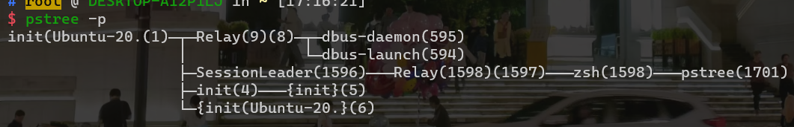

Operating System Structures
用户态 -> libraries -> kernel -> ...
Microkernel System Structure
思想：不是所有代码都能run在内核态
如果把这段代码从内核态放到用户态，系统就不能运转了，说明不能再拆了
核心文件管理，内核调度等一般是放在内核态的
微内核解决问题的手段，是有代价的
如果把文件系统、设备驱动程序丢到用户态，用户态和内核态之间的切换，开销非常大，可能从用户态进到内核态，内核态再调用用户态，用户态再进到内核态，切换时的开销非常大
In general，微内核性能比宏内核的性能要低
为什么要引入微内核？因为整体内核的扩展比较困难，不适用于外设变多的情况
Exokernel：Motivation
在外内核的概念中，内核做的事情只是将访问外部硬件结构这件事抽象出来了
至于如何访问（顺序、随机等），都需要用户态程序进行定义
但遵循隔离的基本思想
Tracing
收集特定事件的数据
工具：strace， gdb， perf， tcpdump
strace能把程序运行时的系统调用和参数打印出来

操作系统运行起来之后，第一个运行的进程，是进程树的根
操作系统不care后续有多少进程，只需要提供fork子进程的机制即可
fork
include
fork(); //是一个系统调用，fork一个子进程出来
getpid();//
fork一个子进程出来之后，需要返回一个新的进程结构体
对于父进程来讲，fork()的返回值是子进程的PID
如果时钟中断产生，此时要进行系统调度
在Linux中，当新进程创建的时候，会完整地拷贝父进程的状态，当调度到P2的时候，也会往下执行，只不过在调度P2的时候，fork()返回值是不一样的，返回值是0，（子进程中不再创建），fork()执行一次返回两次，父进程中返回子进程的PID，子进程中返回0
exec
可以通过fork创建一个壳，然后execvp加载一个新的可执行文件，就实现父进程和子进程执行不同的功能
wait
父进程和子进程各执行各的，没什么关系加上wait，就能让父进程等待子进程结束，再结束
如果父进程已经结束了，子进程还没结束，那么子进程变成孤儿进程了，子进程结束后希望向父进程报告结果，如果父进程提前结束了，会把子进程给init(1号进程)当儿子
为什么不在fork时就指定子进程执行什么可执行文件
把fork和execvp分离，可以做很多tricky的事情
比如，可以在execvp之前做输入输出的重定向，把标准输入不输出到终端上，而是输出到file里，就可以在execvp之前，做一些事情..
1 2 | |
ptrace
strace是一个可执行文件ptrace是一个系统调用
gdb通过fork系统调用，create一个子进程，子进程加载a.out，通过ptrace告诉子进程你被trace了
trace另一个进程实际上对这个进程有了控制权，所以就有权限
特权用户可以trace其它非特权用户创建的子进程，父进程可以trace子进程
整体内核（UNIX）
在操作系统内核包含了很多功能，放在privilege态进行；用户态去系统调用使用操作系统的服务
安全性差（塞了太多功能，任何一个部分出问题都会导致操作系统崩溃）、扩展性差
不过，现在Linux也支持内核模块
微内核（MicroKernel）
不应该在特权模式下run特别多代码，只执行必须在特权模式下执行的代码，如那些一旦放在用户态就无法正确运行的代码
进程管理调度、同步等，还放在内核态
安全性好、扩展性好（新增一个功能就像安装软件一样）、鲁棒性强（把代码质量比较低的模块剥离出来也能提高稳定性）
系统调用开销特别特别大
外内核（ExoKernel）
操作系统不要抽象太多，不希望抽象出文件系统，只要抽象出如何从磁盘上读取raw data即可
内核模块，如LICM
编译生成.ko文件
在内核模块里找内核提供的API，和动态链接的原理一样（？？？？？？？？？
process
fork一个子进程之后，是duplicate一份代码到子进程，子进程和父进程是相同的代码、独立的运行
execv是指定一个路径和命令，然后执行这个命令，也就是说，命令中含一个可执行文件，在子进程中会load这个可执行文件
Linux中，创建子进程和指定可执行文件是分开的，中间可以灵活控制
Windows中，是合并起来的，fork时要提供可执行文件的路径